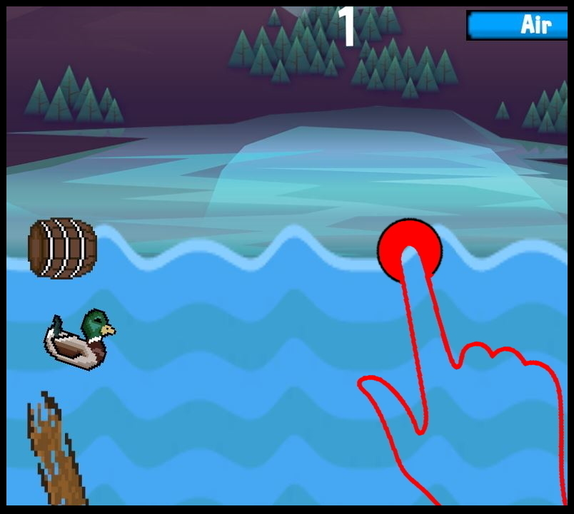
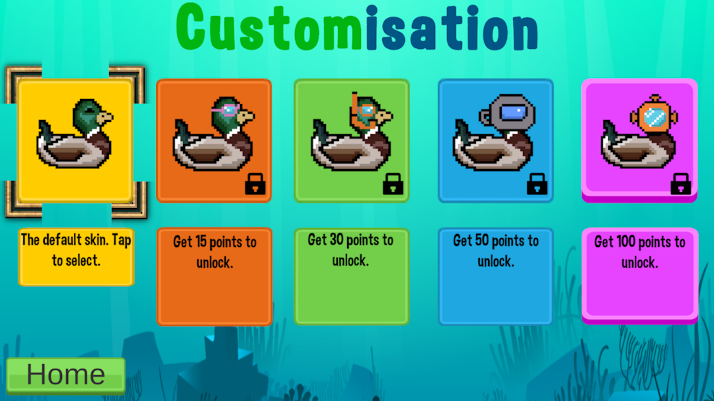

Duck Dive was my second mobile game release. I used what I had learnt from Space Tracer and built upon it to create an arcade side-scroller game with high replayability. I tried to capture the simple but fun nature of popular mobile games around 2010 such as Temple Run and Flappy Bird. The inspiration for the project was watching ducks at my local lake feed off of the bottom of the lake by diving underwater.
Players tap or hold on the screen to dive underwater, earning points by navigating through underwater obstacles without collision. Contact with any obstacle results in a reset, encouraging careful timing and positioning. Whilst on the water's surface, players can swipe upward to launch into the air, where collectible items such as bread and peas provide bonus points. However, airborne hazards like hawks and swans introduce additional risk, requiring quick decision-making. An oxygen system adds a strategic layer to gameplay. Diving gradually depletes oxygen, which is slowly replenished upon resurfacing. This creates a constant trade-off between staying underwater to score points and surfacing or flying to avoid danger. The games difficulty gradually increases which increases the speed of obstacles and reduces the speed that your oxygen replenishes and increases how quickly it depletes.

I Implemented Google Play Games Services integration for achievements and global leaderboards. Built a scalable unlockable skins system using PlayerPrefs and Scriptable Objects, enabling dynamic unlocking, persistent selection, and runtime sprite swapping via a centralised SkinDatabase scriptable object.
